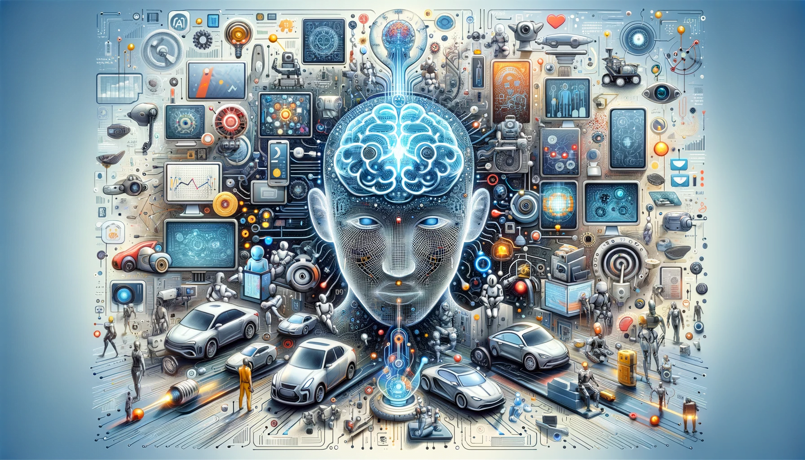

Bienvenidos al mundo de la Inteligencia Artificial
Introduccion a la inteligencia artificial
La inteligencia artificial (IA) es una disciplina de las ciencias de la computación que busca crear máquinas capaces de imitar la inteligencia humana para realizar tareas y mejorar conforme recopilen información. La locución fue acuñada en 1956 por el informático John McCarthy en la Conferencia de Dartmouth1. La IA permite a los ordenadores y dispositivos digitales aprender, leer, escribir, crear y analizar

TIPOS DE INTELIGENCIA ARTIFICIAL
Aprendizaje Automático (ML)
Procesamiento del Lenguaje Natural (NLP)
Visión por Computadora
Aprendizaje Automático (ML)
El Aprendizaje Automático es un subconjunto de la IA que enfatiza el desarrollo de algoritmos que permiten a las computadoras aprender y realizar predicciones o decisiones sin programación humana explícita. El ML ha revolucionado numerosas industrias, incluyendo la salud, las finanzas y el marketing.
Procesamiento del Lenguaje Natural (NLP)
El Procesamiento del Lenguaje Natural es una rama de la IA que se enfoca en permitir que las computadoras comprendan, interpreten y respondan al lenguaje humano de manera significativa y útil. El NLP se ha vuelto esencial en los chatbots, los asistentes virtuales y las aplicaciones de traducción de idiomas.
Visión por Computadora
La Visión por Computadora implica permitir que las computadoras analicen y comprendan información visual de imágenes o videos, simulando las capacidades de la visión humana. Encuentra aplicaciones en campos como los vehículos autónomos, el reconocimiento facial y la detección de objetos.
Biografia
BIOGRAFIA
PERFIL
Soy una persona, con valores, responsable, de buena escucha, trabajo en equipo